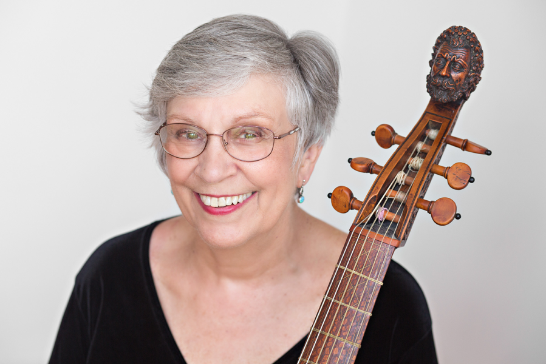

Catharina Meints grew up in the Chicago area in a musical family. Loving orchestral playing from a young age, she played in local orchestras and started to attend the National Music Camp at Interlochen, MI when she was thirteen. Five summers there reinforced her dream to be part of a great orchestra. She attended the Eastman School of Music on full scholarship, and while in school she played in the Rochester Philharmonic and the summer Grant Park Orchestra in Chicago. After graduation, because of her professional background, she was immediately hired to join the newly formed, but short-lived Chamber Symphony of Philadelphia. The orchestra of 36 was made up of recently retired Philadelphia Orchestra musicians, a few recently graduated musicians at the beginning of their careers, and some mid- career artists who wanted to be part of a wonderful small orchestra. Unfortunately the orchestra ran out of money after only two years, but five recordings made for RCA are collector's items.
Meints' life changed forever when she met James Caldwell, the principal oboist of that orchestra. He played viola da gamba in his free time and had bought five instruments-a consort of viols- so he could coax fellow musicians to learn to play this very social instrument. Their first dates were all about the viol and they were married just a few months after they met. They attended summer workshops including one in Saratoga Springs, NY where they worked with August Wenzinger, the eminent Swiss viol player and teacher. Meints decided to explore the vast solo literature for the viol while still enjoying the social aspects of consort playing.
After the Chamber Symphony folded, James was asked to return to be principal oboe of the National Symphony in Washington, DC. Meints joined the orchestra as well. She continued to pursue her studies of the viola da gamba during those years. They were there for three years when opportunities opened up for both of them. In 1971 Jim was invited to join the faculty of the Oberlin Conservatory of Music as Professor of Oboe and Catharina won the audition to be a cellist with the Cleveland Orchestra. She would finally be a member of a great orchestra while actively performing early music as well.
Meints soon became a part of the Cleveland/Oberlin baroque music scene. She played in the Oberlin Baroque Ensemble, the Cleveland Baroque Soloists, and the Oberlin Consort of Viols as well as continuing to be a member of the Cleveland Orchestra. She performed in these groups on five instruments: cello, bass viola da gamba, treble viola da gamba, baroque cello and pardessus de viole.
In 1972 James Caldwell and she launched the Oberlin Baroque Performance Institute, a summer workshop that has continued to be the preeminent learning opportunity for those interested in baroque music. During the early years of the Institute, the groups she played with made a number of recordings including both solo music and chamber music. Over the years she has appeared on over three dozen recordings (not counting Cleveland Orchestra recordings.)
Family life—son, Jonathan, arrived in 1981—slowed down the performance pace somewhat, and teaching became a more important part of her life. She was able to start teaching at the Oberlin Conservatory with a very small number of students in 1976. She built the studio over the years. Conservatory string players who took secondary lessons, were the majority of her students.
Life changed again in 2006 with the death of her husband of 40 years and her retirement from the Cleveland Orchestra after 35 years. Her work at Oberlin became even more central to her life. She still performs on faculty recitals and occasionally with Apollo's Fire and other groups around the country. Meints has taught regularly at the Viola da Gamba Society of America's annual Conclave and is now a board member of that group.
Catharina Meints Caldwell has also enjoyed writing. In 2012 “The Caldwell Collection of Viols” was published and more recently she has produced an iBook, “The Oberlin Baroque Performance Institute-The Wenzinger Years”.
